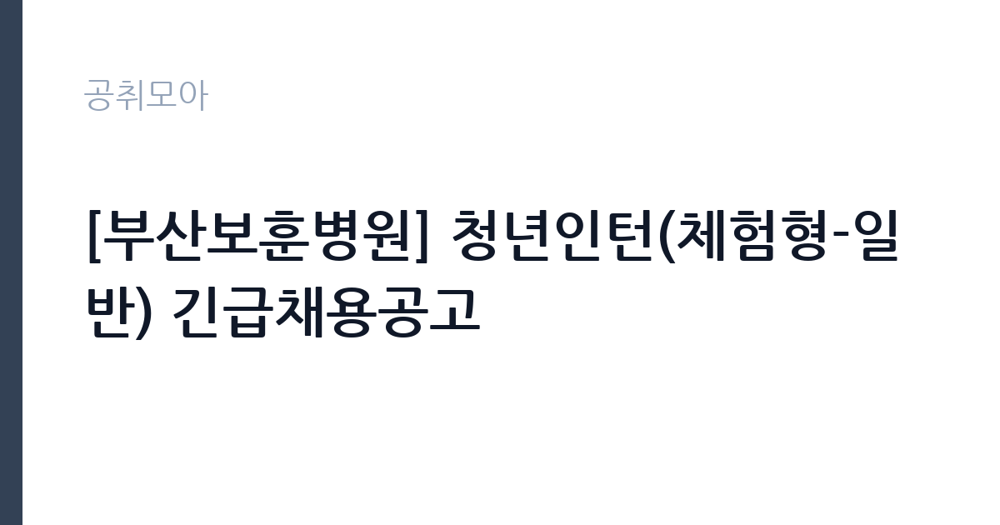

[공공기관] [부산보훈병원] 청년인턴(체험형-일반) 긴급채용공고
한국보훈복지의료공단 · 부산 · 마감 2026-11-12 (D-11) · 출처 잡알리오

한눈에 보는 모집 조건
| 기관 | 한국보훈복지의료공단 |
|---|---|
| 공고명 | [부산보훈병원] 청년인턴(체험형-일반) 긴급채용공고 |
| 고용형태 | 청년인턴(체험형) |
| 근무지 | 부산 |
| 게시일 | 2026-11-02 |
| 마감일 | 2026-11-12 (D-11) |
지원자격, 이렇게 읽으세요
- 공공기관 채용공시
- 세부 조건은 원문 공고문 확인
응시자격은 직종별 요건과 공통요건으로 나뉩니다. 임상병리사는 공고일 기준 임상병리사 면허증 소지자, 간호조무사는 간호조무사 자격증 소지자여야 하고 두 경우 모두 합격증서는 인정되지 않습니다. 행정보조는 별도 자격요건이 없습니다. 공통요건은 공단 인사규정 제18조의 결격사유에 해당하지 않을 것, 만 15세 이상 34세 이하일 것, 부산보훈병원의 다른 공고에 중복 지원하지 않을 것입니다. 연령 기준은 청년고용촉진특별법 시행령 제2조를 따릅니다. 중복 지원하면 서류심사에서 불합격될 수 있다는 점은 계약직과 청년인턴 공고가 같은 날 함께 열려 있어 특히 주의해야 합니다.
이 공고의 포인트
첫 번째 포인트는 경력이 아니라 자격과 연령으로 지원 자격이 갈린다는 점입니다. 행정보조는 자격요건이 없어 사회 진입 단계의 청년에게 실질적인 문이 열려 있습니다. 두 번째는 체험형 인턴이라는 성격입니다. 체험형은 정규직 전환을 전제하지 않고 직무 경험을 제공하는 프로그램으로, 채용형 인턴과 구분됩니다. 세 번째는 가점입니다. 장애인은 전형단계별 10퍼센트, 취업지원대상자는 5퍼센트 또는 10퍼센트가 붙습니다. 다만 3명을 뽑는 임상병리사 직종처럼 채용인원이 적은 경우 취업지원대상자 가점은 적용되지 않을 수 있습니다.
전형은 어떻게 진행되나
1차 서류전형은 응시자격 적격 여부만 심사하고, 합격자는 11월 20일 금요일에 발표합니다. 2차 면접전형은 11월 24일 화요일이며 면접 성적 100퍼센트로 60점 이상자 가운데 고득점 순으로 선발합니다. 최종합격자는 11월 26일 목요일에 발표합니다. 접수는 보훈공단 채용지원 사이트(bohun.fairyhr.com)에서 입사지원서를 작성하는 온라인 방식만 인정됩니다. 서류 단계 배점이 없으므로 자격 증빙과 제출서류 완비가 사실상 서류전형의 전부입니다.
원문에서 확인한 전형 방식
가. 임상병리사 - 공고일 기준, 임상병리사 면허증 소지자 (합격증서 불인정) 나. 간호조무사 - 공고일 기준, 간호조무사 자격증 소지자 (합격증서 불인정) 다. 행정보조 - 별도 자격요건 없음 라. 공통 -공단 인사규정 제18조에 정한 결격 사유에 해당하지 않는 자 -15세 이상, 34세 이하(청년고용촉진특별법 시행력 제2조) -부산보훈병원 타공고 중복지원 불가(중복지원시 서류심사 불합격할 수 있음) ※전 항을 모두 충족해야함
이런 분께 추천해요
- 만 15세 이상 34세 이하 청년으로 병원 행정 업무를 경험해보고 싶은 분. 행정보조는 자격요건이 없습니다.
- 임상병리사 면허를 취득한 청년. 3명을 뽑아 이번 공고에서 가장 선발 인원이 많은 직종입니다.
- 간호조무사 자격증을 보유한 청년. 1명을 선발합니다.
지원 전 체크리스트
- 만 34세 이하인가. 청년고용촉진특별법 시행령 제2조 기준이 적용됩니다.
- 임상병리사·간호조무사 지원자라면 자격증 사본을 준비했는가. 합격증서는 인정되지 않습니다.
- 부산보훈병원의 계약직·업무지원직 공고에 함께 지원하지 않았는가. 중복 지원은 불합격 사유가 될 수 있습니다.
- 접수 마감이 오전 10시라는 점을 확인했는가. 마감일 당일 오후에는 접수할 수 없습니다.
모집 일정과 제출 타이밍
접수는 2026년 11월 2일 월요일 오후 2시에 시작해 11월 12일 목요일 오전 10시에 마감합니다. 마감 시각이 오전 10시이므로 하루 전에 미리 제출하는 편이 안전합니다. 서류전형 합격자는 11월 20일 금요일, 면접은 11월 24일 화요일, 최종합격자는 11월 26일 목요일에 발표합니다. 모든 전형이 11월 안에 마무리되는 일정이라 준비 기간이 길지 않습니다.
직무 이해하기: 공공기관
청년인턴(체험형)은 정규직 채용을 전제로 하지 않고 직무 경험을 쌓도록 운영하는 단기 프로그램입니다. 부산보훈병원의 인턴은 배치 직종에 따라 업무가 달라집니다. 임상병리사 인턴은 진단검사의학과에서 검체 접수와 분류, 장비 운용 보조를 맡습니다. 간호조무사 인턴은 병동이나 외래에서 환자 안내와 진료 보조를 합니다. 행정보조 인턴은 원무·서무 부서에서 문서 정리와 자료 입력, 민원 응대 보조를 담당합니다. 세 직종 모두 국가유공자와 보훈가족을 상대하는 현장이므로 정확한 안내와 친절한 응대가 기본입니다.
자기소개서 작성 팁
체험형 인턴의 자기소개서는 성과 자랑보다 배우려는 태도를 보여주는 문서입니다. 첫 문단에서는 지원 직종을 명확히 쓰고, 왜 그 직무를 경험하고 싶은지 한두 문장으로 밝히십시오. 두 번째 문단에서는 학교나 아르바이트, 봉사활동에서 사람을 상대한 경험을 구체적으로 적으십시오. 병원 업무는 안내와 응대가 큰 비중을 차지하므로 이 경험이 직접적인 근거가 됩니다. 세 번째로는 인턴 기간 동안 배우고 싶은 것 두 가지를 제시하십시오. 예를 들어 검체 처리 절차와 의료기관 문서 관리 방식을 들 수 있습니다. 마지막으로 인턴 이후에도 보건의료 분야에서 일하고 싶다는 방향을 짧게 덧붙이면 지원 동기가 분명해집니다.
면접 준비 포인트
면접은 100점 만점으로 60점 이상이면 합격 후보가 됩니다. 질문은 세 갈래로 예상됩니다. 첫째 지원 직종에 대한 이해입니다. 임상병리사라면 검체 처리 흐름을, 행정보조라면 병원 행정 업무가 무엇이라고 생각하는지를 묻습니다. 둘째 사람을 응대한 경험입니다. 환자나 민원인을 상대하며 어려움을 해결한 사례를 준비하십시오. 셋째 근무 태도입니다. 인턴 기간이 짧은 만큼 지각과 결근 없이 끝까지 근무할 수 있는지를 확인합니다. 답변은 결론부터 말하고 근거를 붙이는 순서로 정리하면 전달이 분명해집니다.
급여·근무조건 읽는 법
공고문에는 인턴 보수가 금액으로 명시되어 있지 않아 원문 공고문과 병원 총무부 확인이 필요합니다. 청년인턴(체험형)은 정규직 보수 체계와 별도로 운영되는 경우가 많아, 월 급여와 근무시간, 4대 보험 가입 여부를 함께 확인해야 합니다. 참고로 알리오 2025년 결산 공시 기준 한국보훈복지의료공단의 일반정규직 1인당 평균보수액은 7,172만원, 신입사원 초임은 4,170만원입니다. 다만 인턴은 이 공시값과 무관한 별도 처우이므로 정규직 초임과 비교해 판단하면 실제와 어긋납니다. 평균보수액은 기본급에 고정수당과 성과상여금, 급여성 복리후생비를 합산한 값이라는 점도 감안하십시오.
자주 묻는 질문
- 체험형 인턴은 정규직으로 전환되나요?
체험형은 정규직 전환을 전제하지 않는 직무 체험 프로그램입니다. 공고문에도 전환 조항이 안내되어 있지 않으므로, 취업 준비 과정의 경험으로 보는 것이 정확합니다. - 만 34세인데 지원할 수 있나요?
공고문은 만 15세 이상 34세 이하를 응시자격으로 명시하고 있습니다. 구체적 기준일과 계산 방식은 청년고용촉진특별법 시행령 제2조를 따르므로, 접수 전 병원 총무부에 확인하는 편이 안전합니다. - 여러 직종에 동시에 지원할 수 있나요?
하나의 공고 안에서는 직종을 선택해 지원합니다. 부산보훈병원의 다른 공고에 중복 지원하면 서류심사에서 불합격될 수 있다고 명시되어 있습니다.
함께 보면 좋은 공고
[공공기관] 대한적십자사 인천사할린동포복지회관 직원(요양보호사) 채용 공고 — 마감 2026-11-17[공공기관] 건설분야 기간제 근로자 채용공고 [HVDC건설본부] — 마감 2026-11-16[공공기관] 대한적십자사 인천사할린동포복지회관 직원(요양보호사) 채용 공고 — 마감 2026-11-17출처: 잡알리오 공개정보를 바탕으로 공취모아가 정리한 안내글입니다. 모집 조건·일정은 변경될 수 있으니 지원 전 반드시 원문 공고문을 확인하세요. 본 글은 정보 제공용이며 합격을 보장하지 않습니다.